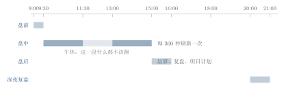

第五章一天是怎么过完的？—— 盘前、盘中、盘后、深夜
5.1九点我在开会，十五点我在地铁上
二零二六年九月十日，星期四。 上午九点，我在会议室。投影仪上放着季度复盘，我手边一杯已经凉掉的茶。 下午三点，我在回家的地铁上，一手扶栏杆，一手拎着电脑包。 晚上八点，我在厨房洗碗，孩子在客厅写作业。 这三段时间里，我没有打开过一次行情软件。手机在口袋里，行情推送全部被我关掉了。 可就在这一天，系统至少跑了三轮完整的分析。开盘前它算过一遍，盘中每隔一段时间看一眼，收盘后把它一天的账写完，到了晚上还给第二天留了一份计划。 那天它给市场的定性是“退潮风险”。这不是我事后回想时给的形容词，是它自己写在库里的标签：修正后总分 38.431，对应的仓位系数 0.102market_sixdim_daily 表，trade_date = 2026-09-10，只读查询于 2026-09-24。3。
我对着这一行字想了很久。
我在开会的时候，它在干什么？我在地铁上晃的时候，它凭什么觉得该看盘？我洗碗的时候，它为什么已经不看了？还有——它凭什么知道，现在这个时刻属于“盘前”而不是“盘中”？
这一章就回答一个问题：它的一天，是怎么被切开的。
5.2先别急着讲程序，先看一张值班表
设想你住的楼下有一家社区医院。它不是急诊，所以夜里不开门，但它有门诊、有化验、有药房。 医院墙上贴着一张值班表。表上只有四行：- 上午八点到八点半：交接班。昨天夜班把没处理完的事说清楚，护士核对药品，医生翻昨天的化验单。
- 上午八点半到十一点半：门诊。所有科室到位，病人来了就接。
- 中午十一点半到下午一点：午休。只留一个值班护士，其他人都去吃饭。
- 下午一点到两点：整理。把上午的记录归档，把明天要复查的病人列出来。
闹钟只会响。值班表会告诉你“响过之后谁该干什么”。
差别在两个地方。
第一，值班表认得午休。闹钟到了中午十二点照样响，可医院这时候不看病——它只留一个人守着。一个只按钟点触发的系统，会在所有人都吃饭的时候，把全套流程再跑一遍，然后抱怨没数据。
第二，值班表认得交接。上午的化验单必须交到下午那个人手里；不交接，下午的医生就得重新抽一次血。一个不分先后的系统，会在化验单还没出来时就去开药。
我后来意识到，我要给这个系统做的，根本不是一只闹钟，而是一张值班表。表上要写清楚：谁在岗、什么顺序、什么时候停工、干过的活不许再干第二遍。
5.3如果不排这张表，会发生什么
我一开始觉得“排班”这件事有点小题大做。不就是按时间调用几个功能吗？写一个定时器，九点整触发一轮，不就行了。 后来我把不排班的代价一条一条列出来，发现有三条躲不掉。 第一条，顺序会乱，因为任务之间有真实的依赖。 盘前那串任务不是平铺的。它有一条看不见的传送带：市场扫描的结果要交给因子健康检查，因子健康检查的结果要和市场扫描一起交给选股，选股的结果再交给组合模拟。 这不是我描述出来的关系，是代码里写死的关系。后面我们会看到，每个任务创建时都会把“上家的任务编号”当成参数传进去。如果这些任务被同时触发，选股就会在一张还没算完的因子表上开工。 第二条，窗口会被错过，而开盘不等人。 盘前那段流程必须在九点半之前跑完。合规检查、隔夜风险、晨间简报，全都是“开盘之前才有效”的东西。九点半之后交付一份“今天这个组合还不合规”，等于没有交付——因为该不该买，已经在开盘那一秒决定了。 第三条，它会重复干同一件事，而且没人拦得住。 这一条我是在日志里撞见的。有一版系统，收盘之后日志还在不停地刷同一个词，三十秒一次，刷了一整个下午。查下去才发现：主循环是一个固定三十秒的定时器，而复盘阶段那三个小时里，它每三十秒都会重新判断一次“该不该复盘”，判断完发现“今天已经做过了”，然后什么都不做，但日志先把“进入复盘”写了一遍。 它没有做错事，但它做了一下午无用功，还把日志刷满了。 教训是：“什么时候该做”和“做过了就别再做”是两张不同的表。值班表只写了前者，缺了后者。5.4一个差不多对的模型：把一天切成四段
现在我先给你一个粗糙但方向正确的模型。 把一整天切成四段。每一段有它自己的任务，段与段之间交接，段内的任务按固定顺序跑。 这个模型很接近真相，它甚至就是系统里“任务阶段”的名字：盘前（PRE_MARKET，9:00--9:30）、盘中（IN_MARKET，9:30--15:00）、盘后（POST_MARKET，15:00--16:00）、深夜复盘（NIGHT_REVIEW，20:00--21:00）。
四段，听起来干脆。但这个模型有两处裂缝，不补上就没有办法落地。
这个近似在哪里失效
裂缝一：四段太粗，认不出午休。盘中那一段横跨 9:30 到 15:00，可中间 11:30--13:00 市场是关着门的。一个只知道“现在是盘中、该每五分钟看一次”的系统，会在午休继续看盘，然后拿到一堆不动的价格。时段必须切得比“四段”更细。
裂缝二：四段不记得自己做过什么。它只回答“现在属于哪一段”，不回答“这一段的事今天做过没有”。重启一次，它就把一天重跑一遍。阶段判定之外，还必须有幂等标记。
5.5它在系统里长什么样
先看最细的那一层：市场时段。系统把它切成了八个常量，其中七个是真正常用的时段（第八个是“开盘前的准备”）。internal/util/trading_hours.go）const (
PhasePreMarket MarketPhase = "PRE_MARKET" // 盘前准备 开盘前-09:15
PhasePreOpen MarketPhase = "PRE_OPEN" // 盘前 09:15-09:30
PhaseMorningSession MarketPhase = "MORNING_SESSION" // 上午交易 09:30-11:30
PhaseLunch MarketPhase = "LUNCH" // 午休 11:30-13:00
PhaseAfternoonSession MarketPhase = "AFTERNOON_SESSION" // 下午交易 13:00-15:00
PhasePostMarket MarketPhase = "POST_MARKET" // 盘后 15:00-15:15
PhaseReview MarketPhase = "REVIEW" // 复盘 15:15-18:00
PhaseClosed MarketPhase = "CLOSED" // 休市
)| 时段 | 枚举 | 时间 | 系统该有的动作 |
| 盘前竞价 | PRE_OPEN | 09:15--09:30 | 前一天定好的盘前流程必须已经跑完 |
| 上午交易 | MORNING_SESSION | 09:30--11:30 | 盘中监控、可交易池处理、决策补跑 |
| 午休 | LUNCH | 11:30--13:00 | 停手，不刷新 |
| 下午交易 | AFTERNOON_SESSION | 13:00--15:00 | 同上午交易 |
| 盘后 | POST_MARKET | 15:00--15:15 | 收盘价入库、盘口摘要落库 |
| 复盘 | REVIEW | 15:15--18:00 | 结算、因子复盘、明日计划 |
| 休市 | CLOSED | 其余时间 | 不交易，也不产生当日决策 |
另有 PRE_MARKET（开盘前--09:15）一档，用于“开盘前的准备”，不计入交易时段。
系统源码 internal/util/trading_hours.go；核对时间 2026-09-24。
internal/scheduler/auto_scheduler.go）func (s *AutoScheduler) schedulingLoop() {
ticker := time.NewTicker(30 * time.Second)
defer ticker.Stop()
s.checkAndTrigger()
// 启动较晚（已进入盘中时段）时补偿执行错过的盘前任务
s.compensateMissedPreMarket()
for {
select {
case <-s.ctx.Done():
return
case <-ticker.C:
s.checkAndTrigger()
}
}
}
RepeatInterval: 300 的字段，单位是秒系统源码 internal/scheduler/task_scheduler.go，三个盘中监控任务的 RepeatInterval 均为 300；核对时间 2026-09-24。4。三百秒，五分钟。
现在回到四个任务阶段里最忙的那一段：盘前。它是全书所有故事的开头，因为“今天买什么”这件事，是在这半小时里被决定的。
盘前一共七个任务，执行顺序固定，而且每个任务在创建时都会把上家的任务编号带进来。
| 序 | 角色 | 任务类型 | 它在干什么 |
| 1 | Planner | CHECK_MANDATE | 检查当前组合是否还符合投资委托书 |
| 2 | Quant | MARKET_SCAN | 隔夜市场扫描（海外、指数、消息） |
| 3 | Quant | FACTOR_HEALTH | 因子健康度分析（价值、动量、质量……） |
| 4 | Quant | STOCK_SCREENING | 全市场选股（依赖 2、3 的产出） |
| 5 | Quant | PORTFOLIO_SIMULATION | 基于候选股票做组合模拟 |
| 6 | Risk | OVERNIGHT_RISK | 隔夜风险、跳空风险评估 |
| 7 | CIO | MORNING_BRIEF | 汇总前六份报告，形成晨间简报 |
执行完成后系统写下一行日志断言："[WorkflowEngine] 盘前阶段完成，执行了 7 个任务"。
系统源码 internal/agentworkflow/workflow_engine.go，函数 ExecutePreMarketPhase；核对时间 2026-09-24。
internal/agentworkflow/workflow_engine.go）// Step 1: Planner 检查投资政策
mandateCheckTask, err := we.taskMgr.CreateTask(
AgentPlanner, TaskTypeCheckMandate,
"检查投资政策合规性", "检查当前组合是否符合Investment Mandate要求",
workflowID, "HIGH", phase, nil, nil, "", // 无前置任务
)
// Step 4: Quant 选股——依赖 Step2 的市场扫描与 Step3 的因子健康检查
screenTask, err := we.taskMgr.CreateTask(
AgentQuant, TaskTypeStockScreening, "全市场选股", "根据因子表现进行全市场选股",
workflowID, "HIGH", phase,
[]string{marketScanTask.TaskID, factorTask.TaskID}, nil, "", // 前置任务编号
)
// Step 7: CIO 晨间简报——把前六个任务全部收进来
cioBriefTask, err := we.taskMgr.CreateTask(
AgentCIO, TaskTypeMorningBrief, "CIO晨间简报", "汇总各智能体报告，形成晨间简报",
workflowID, "CRITICAL", phase,
[]string{mandateCheckTask.TaskID, marketScanTask.TaskID, factorTask.TaskID,
screenTask.TaskID, simTask.TaskID, riskTask.TaskID},
nil, "",
)SUCCESS、RUNNING、FAILED、PENDING、SKIPPED系统源码 internal/scheduler/task_scheduler.go，统一状态定义；核对时间 2026-09-24。5。
为什么“状态”这件事值得单列出来？因为一张值班表如果只写“几点做什么”，它就没法回答“这一步做完没有”。有了状态，调度器才敢做两件事：跳过已经成功的、重试失败的。这也是后面第 第九章 章要讲的容错的基础。
最后是那份“签到本”。系统把两个每天只该做一次的标记——last_daily_review_date 和 last_plan_refresh_date——写进配置文件 config/config.json，而且要求它在重启后还能读回来系统源码与事实清单：幂等标记持久化到 config/config.json，启动恢复、重启不重跑；核对时间 2026-09-24。6。
我一开始以为把它放在内存里就够了。后来发现完全错了：这个系统的常态是“你晚上关机，早上开机”。标记只存在内存里，就等于每天早上都失忆一次——昨天已经做过的复盘，今天开盘前会再做一遍。一份不落盘的签到本，等于没有签到本。
这是我最初最根深蒂固的误解。我以为“接了 AI、挂了定时器”就等于“实时盯盘”，越快越好。
事实正相反：这个系统的节拍器从来不是模型，是 A 股的时钟。模型再快，也得等收盘价出来；再聪明，也不能在午休时算出一个新价格。你能做的所有事，都被交易所那几张时间表卡着：9:15 集合竞价、9:30 开盘、11:30 上午收盘、13:00 下午开盘、15:00 收盘。
所以在这套系统里，“实时”这个词是有成本的，而且它的价值随着时段剧烈变化。开盘前后那半小时，一分钟的延迟都可能错过一个决策窗口；午休那一个半小时，多算一次纯属浪费；晚上八点，它算的不是“现在”，是“明天”。
一旦接受了“A 股的节奏才是节拍器”这件事，你会对系统的“慢”变得宽容，也会对它的“快”变得警惕——一个在深夜还要高频刷新的系统，不是在更努力，是在空转。
盘中那三个监控任务，间隔都是三百秒。我看到这个数字时的第一个反应是：随便挑的吧，取个整而已。
其实这是一个两头夹出来的折中。
往快了做，成本立刻上去。每一次刷新都不是免费的空转——盘中监控要拉实时行情、要读组合状态、有些环节还会调用语言模型。三百秒意味着一个交易日的上午加下午（四个小时）里，每个监控任务最多被调用四十次上下。如果把间隔改成三十秒，调用次数直接乘十，而多出来的那些次里，绝大多数看到的还是同一个价格。
往慢了做，时效性就没了。五分钟一次，意味着一个破位的信号最长要过五分钟才被看见。对一个只做日线级别的系统来说，这个延迟可以接受；但如果你的策略是分钟级的，五分钟就是灾难。
所以三百秒不是随手取的，它是“再快就亏钱、再慢就误事”之间那条缝。真正该记住的不是三百这个数，而是这句话：刷新频率是一个可以被你自己改的参数，而且它有价格。改它之前，先问清楚你多买的那些分钟，到底买到了什么。
- 盘前/决策/风控/盘中/盘后五个阶段函数：
internal/agentworkflow/workflow_engine.go，其中ExecutePreMarketPhase执行七个任务并写下“执行了 7 个任务”的断言日志。 - 市场时段的定义与判定：
internal/util/trading_hours.go（GetMarketPhase、IsTradingDay、PhaseLabels）。 - 三十秒调度循环、时段转换触发与盘中补跑：
internal/scheduler/auto_scheduler.go。 - 任务阶段、五种状态、
RepeatInterval：internal/scheduler/task_scheduler.go。 - 幂等标记（
last_daily_review_date/last_plan_refresh_date）的持久化：config/config.json。 - 前端“实时活动”页（流水线进度、活跃任务、按角色筛选的日志）：
ui/src/pages/下的活动页面，路由表在ui/src/App.tsx。